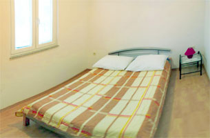

Appartamenti Dana II
La casa Dana II ha due appartamenti per quattro persone e un appartamento per due persone. La casa e` 20 metri lontana dal mare. Gli appartamenti hanno il balcone con la veduta sul mare, la cucina con la stanza di soggiorno e il bagno. C`e` anche il parcheggio assicurato.
Si tratta della costruzione nuova ma la casa e` completamente ordinata e ammobiliata.
Due appartamenti per due persone 1/2+1(letto addizionale)
I prezzi degli appartamenti per due persone a giorno sono( per meno di dieci giorni, senza il letto additivo):
| Media stagione: |
Stagione: |
Media stagione: |
| 1.4. - 31.5. |
1. 6. - 14. 9. |
15. 9. - 1. 10. |
| 35 € |
40 - 50 € |
35 € |
Premium appartamento per due persone 1/2+2 (letto addizionale)

Appartamento per quattro persone 2/2+1 (letto addizionale)
I prezzi degli appartamenti per quattro persone a giorno (per meno di dieci giorni) sono:
| Media stagione: |
Stagione: |
Media stagione: |
| 1.4. - 31.5. |
1. 6. - 14. 9. |
15. 9. - 1. 10. |
| 45 € |
60 - 70 € |
45 € |
|